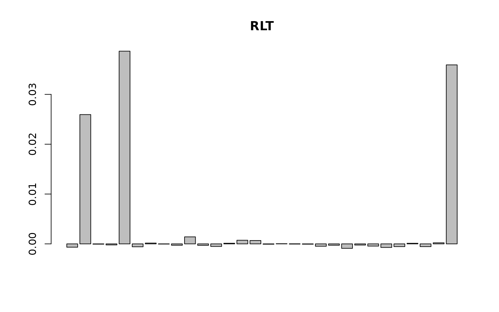

RLT Package: Classification With Reinforcement Learning and Linear Combination Splits
Ruoqing Zhu
Last Updated: July 17, 2025
Test-RLT-Cla.RmdInstall and Load Package
Install and load the GitHub version of the RLT package. Do not use the CRAN version.
# install.packages("devtools")
# devtools::install_github("teazrq/RLT")
library(RLT)
## RLT and Random Forests v4.2.6
## pre-release at github.com/teazrq/RLTLoad other packages used in this guide.
library(randomForest)
library(randomForestSRC)
library(ranger)
library(parallel)Single Variable Embedded Splitting
When reinforcement is enabled, an embedded random forest
model and the corresponding variable importance measure will be used to
search for the best splitting rule. There will be a default setting of
parameters for the embedded model, however you can still tune them
individually.
# Set seed for reproducibility
set.seed(1)
# Define data size
trainn <- 800
testn <- 1000
n <- trainn + testn
p <- 30
# Generate continuous variables (X1) and categorical variables (X2)
X1 <- matrix(rnorm(n * p / 2), n, p / 2)
#X2 <- matrix(rnorm(n * p / 2), n, p / 2)
X2 <- matrix(as.integer(runif(n * p / 2) * 10), n, p / 2)
# Combine continuous and categorical variables into a data frame (X)
X <- data.frame(X1, X2)
# Convert the second half of the columns in X to factors
X[, (p / 2 + 1):p] <- lapply(X[, (p / 2 + 1):p], as.factor)
# Generate outcomes (y)
logit <- function(x) exp(x) / (1 + exp(x))
# y <- as.factor(rbinom(n, 1, prob = logit(1 + rowSums(X[, 1:5]) + 2 * (X[, p / 2 + 1] %in% c(1, 3)) + rnorm(n))) + 2)
y <- as.factor(rbinom(n, 1, prob = logit(1 + 1*X[, 2] + 1*X[, 5] + 3*(X[, p] %in% c(1, 3, 5, 7)))) + 2)
# Set tuning parameters
ntrees <- 1000
ncores <- 10
nmin <- 20
mtry <- p/2
samplereplace <- TRUE
sampleprob <- 0.75
rule <- "best"
nsplit <- ifelse(rule == "best", 0, 3)
importance <- TRUE
# Split data into training and testing sets
trainX <- X[1:trainn, ]
trainY <- y[1:trainn]
testX <- X[(trainn + 1):(trainn + testn), ]
testY <- y[(trainn + 1):(trainn + testn)]
start_time <- Sys.time()
RLTfit <- RLT(trainX, trainY,
ntrees = 500, ncores = 10, nmin = 10,
split.gen = "random", nsplit = 2,
resample.prob = 0.8, resample.replace = FALSE,
reinforcement = TRUE, importance = "distribute",
param.control = list("embed.ntrees" = 50,
"embed.mtry" = 2/3,
"embed.nmin" = 5,
"alpha" = 0.1),
verbose = TRUE)
## Classification Random Forest ...
## ---------- Parameters Summary ----------
## (N, P) = (800, 30)
## # of trees = 500
## (mtry, nmin) = (10, 10)
## split generate = Random, 2
## sampling = 0.8 w/o replace
## (Obs, Var) weights = (No, No)
## alpha = 0.1
## importance = distribute
## reinforcement = Yes
## ----------------------------------------
## embed.ntrees = 50
## embed.mtry = 66.7%
## embed.nmin = 5
## embed.split.gen = Random, 1
## embed.resample.replace = TRUE
## embed.resample.prob = 0.9
## embed.mute = 0
## embed.protect = 14
## embed.threshold = 0.25
## ----------------------------------------
## Do not have 10 cores, use maximum 4 cores.
difftime(Sys.time(), start_time, units = "secs")
## Time difference of 173.4728 secs
# prediction
RLTPred <- predict(RLTfit, testX, ncores = ncores)
# inbag and oobag errors
mean(RLTfit$Prediction != trainY)
## [1] 0.17875
mean(RLTPred$Prediction != testY)
## [1] 0.169
# VI
barplot(as.vector(RLTfit$VarImp), main = "RLT")